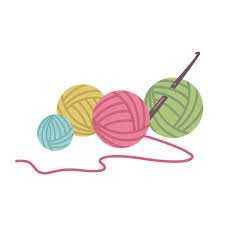

O crochê é uma técnica artesanal que transforma fios em peças únicas, cheias de personalidade e afeto.
Além de ser terapêutico, o crochê permite criar roupas, acessórios e itens de decoração de forma criativa e sustentável.
